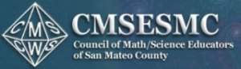
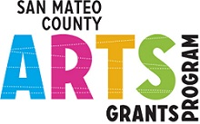
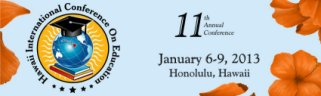
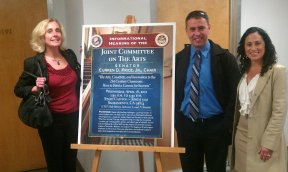
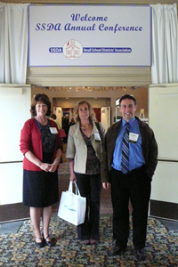

2015-07-10San Francisco, CA
| |
Herbie Hancock, UNESCO Goodwill Ambassador invited Toones for a collaboration
http://goo.gl/SnEdE6 |
|
2015-01-30San Mateo County Office Of Education, San Mateo, CA
 | |
Council of Math/Science Educators of San Mateo County (CMSESMC) Conference
http://cmsesmc.org/ |
|
2014-11-21California Theater, San Jose, CA
 | |
''Arts Really Teach'' is an annual conference for teachers interested in integrating arts education into their classroom curriculum.
http://www.sjsu.edu/education/newsandevents/mcc/index.html |
|
2014-08-19Cosumnes River College, Sacramento CA
| |
''Getting in rhythm: Teaching Fractions Through Music'' project seeks to provide math faculty, math tutors, and supplemental instruction leaders with an alternative method for teaching fractions.
https://www.crc.losrios.edu/ |
|
2014-05-26San Mateo, CA
 | |
San Mateo County Arts Commission Educational Award
http://cmo.smcgov.org/ |
|
2014-02-08San Mateo County Office of Education, San Mateo, CA
| |
Council of Math Science Educators of San Mateo County (CMSESMC) workshop
http://cmsesmc.org/ This conference is a major event in San Mateo County. The workshop sessions will provide participants a wide range of practical and realistic ideas to use in their math and/or science programs, Pre K-12.
|
|
2013-02-14San Francisco Fairmont Hotel, San Francisco, CA
| |
Educating for Creative Minds: Using Brain Science to Ignite Innovation and Imagination
http://www.learningandthebrain.com/ Learning & the Brain provides educational Conferences, Symposiums and Summer Institutes and one-day professional development training seminars on the latest research in neuroscience and psychology and their potential applications to education.
Teachers, school administrators, psychologists, and clinicians from throughout the United States, Canada and more than 60 countries around the world have been attending Learning & the Brain Conferences for more than a decade to hear from leading researchers and universities about the latest discoveries in neuroscience and neuroeducation. Come and learn about the latest brain-based learning, teaching, interventions and curriculum at our various events.
|
|
2013-02-02San Mateo County Office of Education, San Mateo, CA
| |
Council of Math/Science Educators of San Mateo County (CMSESMC) Conference
http://cmsesmc.org/ The 37th Annual STEM Conference provides many
sessions that foster excellence in math, science and technology curricula, educational programs, and promotes
professional excellence in teaching and strengthening leadership in these fields.
CMSESMC is the acronym (and a palindrome) for the Council of Math/Science Educators of San Mateo
County. This professional grass-roots organization of educators and others interested in math, science
and technology education, pre-K through college, represents both public and private institutions
within San Mateo County and the greater Bay Area.
|
|
2013-01-06Hilton Hawaiian Village Waikiki Beach Resort, Honolulu, HI
 | |
2013 Hawaii International Conference on Education
http://www.hiceducation.org/ The 11th Annual Hawaii International Conference on Education will be held from January 6th (Sunday) to January 9th (Wednesday), 2013 at the Hilton Hawaiian Village Waikiki Beach Resort in Honolulu, Hawaii. Honolulu is located on the island of Oahu. Oahu is often nicknamed "the gathering place". The 2013 Hawaii International Conference on Education will once again be the gathering place for academicians and professionals from Education and related fields from all over the world.
|
|
2012-04-18State Capitol, Sacramento, CA
 | |
Informational Hearing of the Joint Committee on the Arts
The Arts, Creativity, and Innovation in the 21st Century Classroom: How to Paint a Canvas for Success |
|
2010-04-14Doubletree Hotel, Sacramento, CA
 | |
SSDA 27th Annual Conference
Small School Districts' Association (SSDA) |
|
2010-04-13Manchester Grand Hyatt, Omni, San Diego Convention Center, San Diego Marriott Marina
| |
2009 AERA Annual Meeting
American Educational Research Association (AERA) has accepted TAM's proposal (out of 11,000) for presentation.
|
|
2009-04-04Seattle, WA
| |
CEC 2009 Convention & Expo
Council for Exceptional Children (CEC) has accepted TAM's proposal for presentation.
|
|
| 2009-04-03 | |
SSDA 26th Annual Conference 2009
Small School Districts' Association (SSDA) has accepted TAM's proposal (out of 11,000) for presentation.
|
|
| 2009-02-09 | |
Brown Bag Meeting Presentation at SFSU
San Francisco State University - Developmental Psychology Brown Bag Meeting Topic presented: Understanding Basic Fraction Concepts through Music: Research to Practice
|
|
2009-02-06San Francisco, CA
| |
Presentation of Academic Music
TAM presented at the Archdiocese of San Francisco |
|
2008-12-06San Bruno, CA
| |
Watch TAM in action at School Board meeting in San Bruno |
|
2008-05-09Oakland, CA
| |
Prudential California Realty's Education Foundation Award
|
|
| 2008-03-03 | |
Brown Bag Meeting Presentation at SFSU
San Francisco State University - Developmental Psychology Brown Bag Meeting Topic presented: Understanding Basic Fraction Concepts Through Music Notation
|
|
| 2007-12-20 | |
Interview at KCSM FM 91.1 Jazz Radio
with Sue Courey Ph.D. and Endre L. Balogh by Alisa Clancy, Co-host and Operations Director
In the picture from left to right: Sue Courey Ph. D, Endre L. Balogh and Alisa Clancy at the KSCM FM 91.1 Jazz Radio Station
|